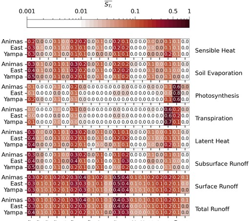

Ahmed ElkoukI am a PhD student at the Department Civil & Environmental Engineering, Michigan State University, where I work on employing a novel hydro-ecological modeling system to examine pathways to achieve water sustainability over the American Southwest. My PhD advisor is Yadu Pokhrel. I completed my MS in Earth Sciences at Université Cadi Ayyad Marrakesh. I worked with Lhoussaine Bouchaou on assessing soil moisture response to climate change in Northern Africa (across the Mediterranean and the Sahel). Email / GitHub / Google Scholar / LinkedIn |
ResearchI'm intrested in expanding our knowledge about the interplay between climate, hydrology, and the biosphere. |
|

|
Toward Understanding Parametric Controls on Runoff Sensitivity to Climate in the Community Land Model: A Case Study Over the Colorado River HeadwatersA Elkouk, Y Pokhrel, B Livneh, E Payton, L Luo, Y Cheng, K Dagon, S Swenson, A Wood, D Lawrence, W Thiery Water Resources Research, AGU, 2024 arxiv / code / A case study over the Colorado River headwaters to understand the parametric controls on runoff sensitivity to climate in a land model. |
Implications of changes in climate and human development on 21st-century global drought riskA Elkouk, Y Pokhrel, Y Satoh, L Bouchaou Journal of Environmental Management, Elsevier, 2022 arxiv / code / slides / Large disparity in drought risk between low and very high human development countries. This study underscores the importance of rapid human development in hotspots of drought risk. |
|
Multi-model ensemble projections of soil moisture drought over North Africa and the Sahel region under 1.5, 2, and 3 °C global warmingA Elkouk, ZEA El Morjani, Y Pokhrel, A Chehbouni, A Sifeddine, S Thober, L Bouchaou Climatic Change, Springer, 2021 arxiv / code / Unprecedented exacerbation of soil moisture droughts over North Africa and Sahel between 1.5–3 °C global warming. Substantial uncertainty can be attributed to the difference in representation of evapotranspiration in Hydrological Models (PET) versus Land Models (the terrestrial components of Climate Models). |
|
Projections of extreme soil moisture drought in southern Moroccan watersheds under anthropogenic climate warmingA Elkouk, ZEA El Morjani, L Bouchaou, A Chehbouni, A Sifeddine L'Académie Hassan II des Sciences et Technologies, Maroc, 2021 arxiv / Historical drought extremes might be considered the new normal conditions at 3°C global warming. Increased aridity in all transitional catchments under 1.5, 2, and 3 °C global warming highlight these environments’ large sensitivity to warming, regardless of its level. |
MediaFeatured media |
 MSUToday: More unprecedented droughts ahead |
ProjectsI have contributed to |
ACCESS: Anthropogenic Water Management, Climate Change, and Environmental Sustainability in the Southwestern USNational Science Foundation (NSF) 2022-2025 In collaboration with Western Water Assessment, I contributed to developing a high-resolution long-term hydrologic simulations using the state-of-the-art Community Terrestrial Systems Model (CTSM) to systematically examine the complex interplay between decreasing water resource under climate change, future demands, and water management. |
|
CHARISMA: CHAngement et vaRIabilitéS cliMAtiques passés et actuels au Maroc: forçages, réponses, impacts et rétroactions - Bases pour la proposition de solutions d’adaptationsAcadémie Hassan II des Sciences et Techniques 2019-2022 I contributed to the assessment of the impact of climate change on water resources over Moroccan catchments, with special attention to changes in soil water content because of its direct relevance to agriculture. Outcomes of this work are presented in the special issue of the CHARISMA project. |
|
Design and source code based on Jon Barron's and Leonid Keselman 's websites. |